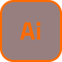
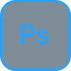

Titre du projet 1
Présente ici le projet 1, son contexte et son objectif. Explique en quelques phrases à qui il s’adresse, ce qu’il propose et le résultat que tu souhaitais obtenir.
Au clavier, utilisez les flèches gauche et droite pour changer d’image après avoir atteint ce groupe avec la touche Tab.
Visuel 1 du projet 1
Visuel 2 du projet 1
Visuel 3 du projet 1
Démarche du projet
Présente ici le point de départ du projet 1 et les objectifs à atteindre. Explique ensuite tes choix de création : tes recherches, tes décisions visuelles ou techniques, puis les étapes principales de la réalisation. Mets en évidence un défi rencontré, la solution retenue et ce que cette expérience t’a permis d’apprendre.
Logiciels & technologies
-

Illustrator
Vectoriel & typo
-

Maya
Modélisation & 3D
-
Unity
Jeu vidéo & interactif
-

After Effects
Montage & VFX
-

Photoshop
Retouche & texture
-

VS Code
Code & développement front-end